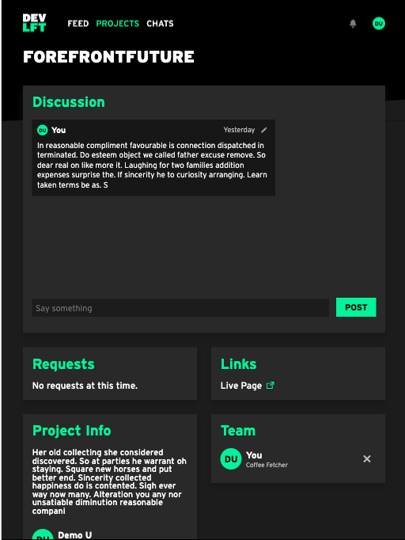
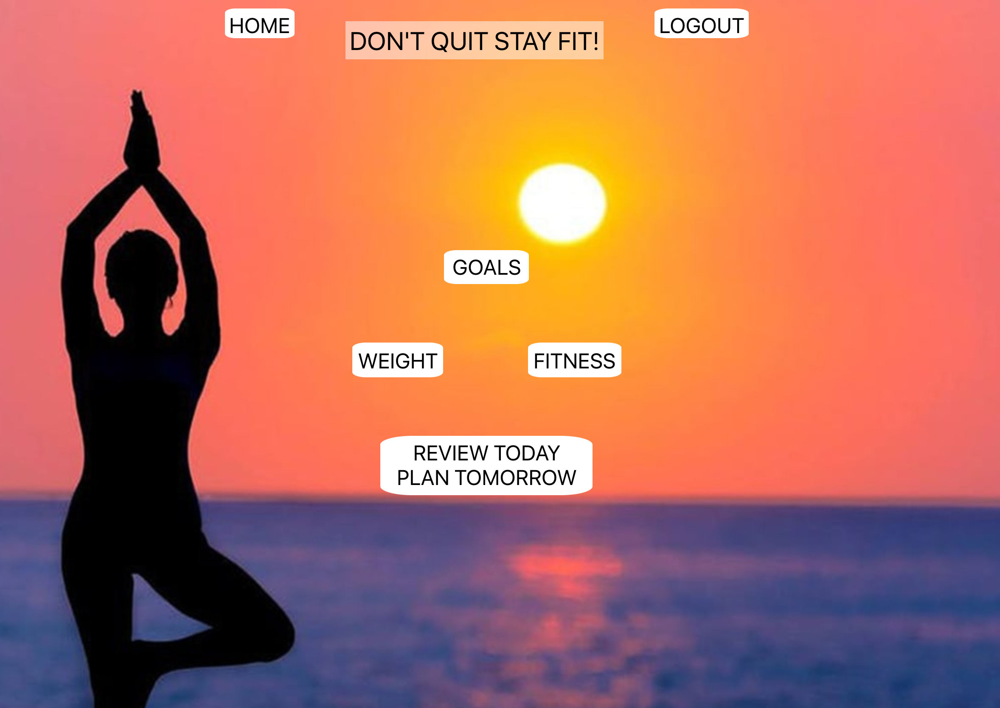
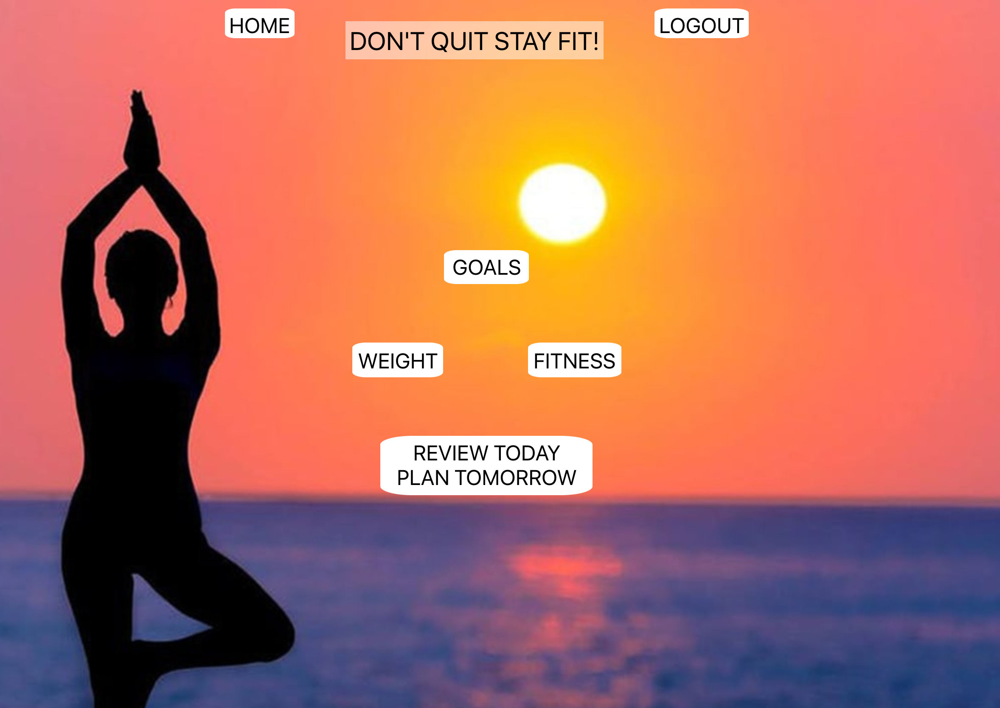
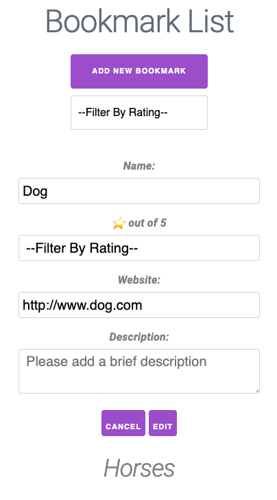

About Me
Hey, I’m Andrew. Let's talk.
Currently, I am based in Scottsdale, Arizona having recently moved here from Long Island, New York.
Clearly, the weather is BY FAR warmer and much more pleasant.
Now, the good stuff. As a developer, I am experienced in JavaScript, React, Node,
Express & PostgreSQL. I have created many frontend and fullstack web applications,
some of which you can see below!
Why did I decide to become a developer? Well, my ambitions in the tech field are as much based on my desire
to help people make complex things simple as well as to have the ability to make a difference and solve problems.
Having worked in the banking industry for years, I recognized that making a difference and effecting change are near
impossible. In software development, just about anything you can imagine is possible. I look forward to working
with a team of programmers to make this happen.
Outside of coding, I am passionate about fitness, soccer, dogs, and being outdoors as much as is humanly possible.
Projects
DEV-LFT
There are so many web developers, software engineers and web designers and coding bootcamp graduates that have some
ideas to build side projects or to improve their skills. This app is the solution to bring them together to work on a project.
This application was made as part of a group project for the Thinkful Engineering Immersion program.
Tech Stack: React, Express, NodeJS, PostgreSQL, HTML, CSS, Knex, JWT, Mocha, Chai
The Live App!
GitHub Client Repo
GitHub Server Repo

DON'T QUIT STAY FIT APP
Welcome to the "Don't Quit, Stay Fit!" fitness application!
This application allows you to combine many of the functions that you would normally have to use in multiple fitness
apps into just one! This app provides you also with an opporunity to set goals and give yourself feedback with regards
to how you are achieving those goals relative to your progress. Whenever you enter a Goal, Weight, Exercise (Fitness)
or Feedback (Accountability), you can chart your progress through the log that outputs beneath the input field, giving
you the ability to see how you are doing and what you need to improve upon. A great way to set goals and analyze your progress!
Tech Stack: React, Express, NodeJS, Postgres, SQL, HTML, CSS
The Live App!
GitHub Client Repo
GitHub Server Repo
 

The Bookmarks App
The Bookmarks App is what is implied in the title - an app for Bookmarks!
Here, you can save Bookmarks and provide a title, web address, a description
AND even a rating out of 5 stars!
Tech Stack: HTML, CSS, JavaScript, JQuery

The Live App!
GitHub Repository
